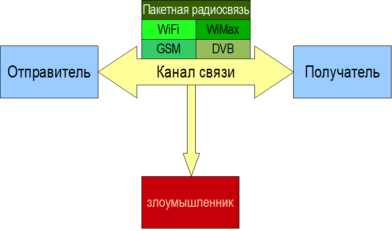

Со времен появления первых криптографических методов и алгоритмов в криптографии наблюдалось противоборство «брони» и «снаряда». Чем большие успехи демонстрировали криптоаналитики, тем более сложные и изощренные алгоритмы шифрования изобретали криптографы. Продолжается это и теперь, хотя во многом вектор противостояния сместился в область компьютерных атак некриптографической направленности. Рассмотрим, что такое криптоанализ, какие бывают методы криптоанализа и их возможности. Кто такой криптоаналитик, какие ресурсы и методы есть в его распоряжении при ведении криптоаналитической работы?
Как было рассмотрено ранее, криптографические методы защиты информации рассматривают математические методы преобразования информации с целью обеспечения ее конфиденциальности и аутентичности. Это необходимо, как правило, для дальнейшей передачи этой информации по некоторому открытому каналу связи. Это может быть как обычный проводной канал связи, так и беспроводной, особенно удобный для прослушивания злоумышленником.
В общем виде система удаленного информационного обмена и ее участники представлены на рис. 2.2. Участники подразделяются на легальных и нелегальных. Нелегальный участник может иметь как активную, так и пассивную стратегию поведения. При изучении криптографических протоколов мы будем рассматривать оба вида нарушителей, при изучении криптографических методов защиты информации актуальной является модель пассивного нарушителя, задачей которого является перехват информации из каналов связи с последующей обработкой этой информации специальными математическими методами. Такая обработка с целью получения доступа к конфиденциальной информации без знания секретного ключа называется криптоанализом.

Рис. 2.2. Система удаленного информационного обмена и ее участники
Криптоанализ − это совокупность методов и алгоритмов, позволяющих прочитать зашифрованное сообщение без знания ключа. Это может быть сделано или с помощью вычисления ключа на основе имеющихся данных или нахождение возможности безключевого чтения.
Вместо нахождения ключа для некоторых алгоритмов может быть вычислен эквивалентный ключ, дающий результат шифрования/расшифрования аналогичный исходному ключу. Этот феномен объясняется тем, что, как правило, БШ используют не исходный ключ для шифрования, а некоторое его расширение, вычисляемое на основе ключа пользователя. Если функция для расширения ключа имеет уязвимости, например, с большой вероятностью допускает коллизии, то различные исходные ключи могут преобразоваться к одинаковым расширенным ключам. При вычислении ключа также не обязательно получить именно исходный ключ, а достаточно вычислить его расширение, используемое при шифровании.
Сложность атаки на криптографический алгоритм оценивается по двум параметрам, первый отражает объем и тип исходных данных необходимых для анализа, второй связан с вычислительными ресурсами (временными), для проведения атаки. Первый из них оценивается по количеству текстов (блоков данных) заданного вида, второй оценивается по количеству требуемых для проведения атаки операций шифрования несмотря на то, что атака может напрямую быть не связаны с выполнением шифрования. Кроме этого, иногда рассматривается такой ресурс как объем памяти, требуемый для проведения атаки.
Итак, модель криптоаналитика предполагает, что:
1. Криптоаналитик имеет в распоряжении достаточный объем данных заданного вида, даже если это трудноосуществимо на практике.
2. Криптоаналитик обладает полными знаниями о используемых криптографических алгоритмах (шифрования и расшифрования) и особенностях их реализации (согласно принципу Кирхгофа).
3. Криптоаналитик обладает временными и вычислительными ресурсами, стоимость которых соответствует стоимости защищаемой информации.
4. Для некоторых видов криптоанализа предполагается, что криптоаналитик имеет в наличии устройство шифрования, имеет возможность влиять на его работу с использованием непредусмотренных воздействий и замерять физические параметры его функционирования.
5. Криптоаналитику не известна какая-либо ключевая информация.
Криптостойкостью называется характеристика шифра, определяющая его стойкость к расшифрованию без знания секретного ключа, т. е. к криптоатаке. Расшифрование без знания секретного ключа называется взломом. Показатель криптостойкости главный параметр любой криптосистемы. В качестве показателей криптостойкости используются:
− размерность ключевого пространства или вероятность подбора ключа за данные время с данными ресурсами;
− количество операций или время необходимое для взлома шифра с заданной вероятностью;
− стоимость вычисления ключевой информации или исходного текста.